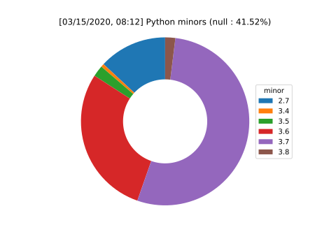
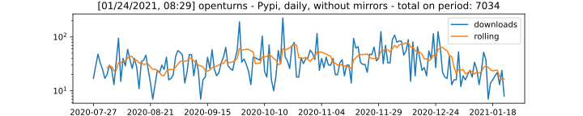
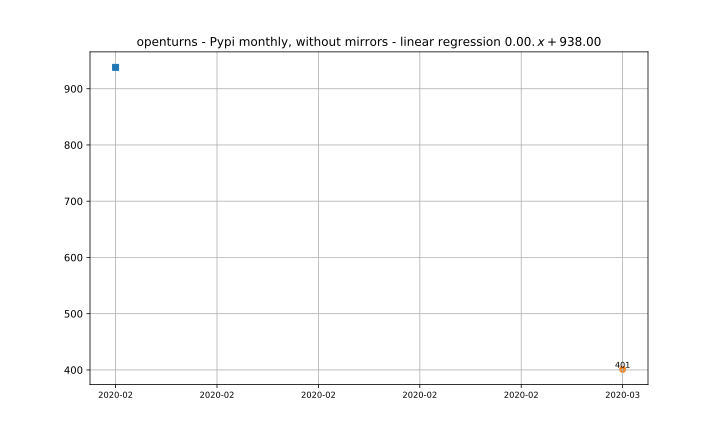
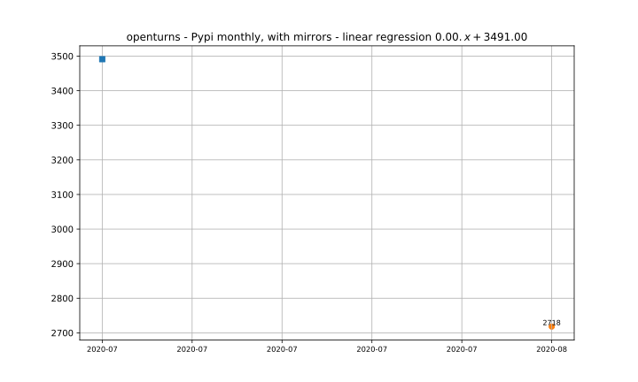

Downloads of OpenTURNS packages
Data are gathered using pypistats and condastats
For pypi, download stats are sourced from the Python Software Foundation's publicly available download stats on Google BigQuery. All aggregate download stats ignore known PyPI mirrors (such as bandersnatch) unless noted otherwise.
total downloads (without mirrors)

pypi : pythons distribution

pypi

|  |  |
conda